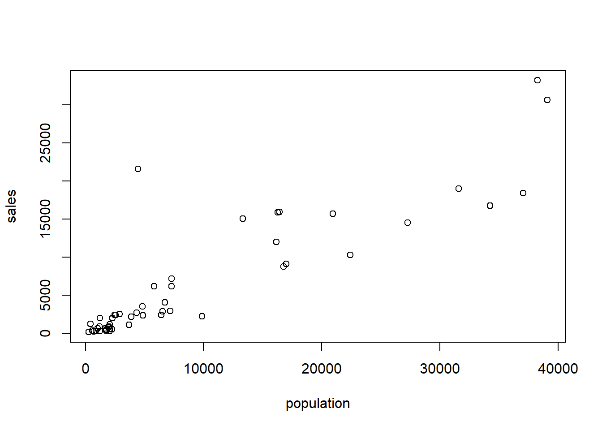

Chapter 2 Basic Linear Regression
Chapter description
This chapter considers regression in the case of only one explanatory variable. Despite this seeming simplicity, many deep ideas of regression can be developed in this framework. By limiting ourselves to the one variable case, we can illustrate the relationships between two variables graphically. Graphical tools prove to be important for developing a link between the data and a predictive model.
# Reformat Data
Lot <- read.table("CSVData\\WiscLottery.csv",header = TRUE, sep = ",")
str(Lot)
cor(Lot)
Lot$pop <- Lot$POP
Lot$sales <- Lot$SALES
Lot$medhome <- Lot$MEDHVL
Lot2 <- Lot[c("pop","sales","medhome")]
#write.csv(Lot2,"CSVData\\Wisc_lottery.csv",row.names = FALSE)
outlr <- read.csv("CSVData\\OutlierExample.csv", header = TRUE)
str(outlr)
outlr$y <- outlr$Y
outlr$x <- outlr$X
outlr$codes <- outlr$CODES
outlr2 <- outlr[c("x","y","codes")]
#write.csv(outlr2,"CSVData\\Outlier.csv",row.names = FALSE)2.1 Correlation
2.1.1 Video (Exercise). Correlation
2.1.1.1 Learning Objectives
In this module, you learn how to:
- Calculate and interpret a correlation coefficient
- Interpret correlation coefficients by visualizing scatter plots
2.1.1.2 Video Overheads
Overhead A. Wisconsin lottery data description
Lot <- read.csv("CSVData\\Wisc_lottery.csv")
#Lot <- read.csv("https://assets.datacamp.com/production/repositories/2610/datasets/a792b30fb32b0896dd6894501cbab32b5d48df51/Wisc_lottery.csv", header = TRUE)
str(Lot)Overhead B. Summary statistics
#options(scipen = 100, digits = 4)
#numSummary(Lot[,c("pop", "sales")], statistics = c("mean", "sd", "quantiles"), quantiles = c(0,.5,1))
(as.data.frame(psych::describe(Lot)))[,c(2,3,4,5,8,9)]
#Rcmdr::numSummary(Lot[,c("pop", "sales")], statistics = c("mean", "sd", "quantiles"), quantiles = c(0,.5,1))Overhead C. Visualizing skewed distributions
par(mfrow = c(1, 2))
hist(Lot$pop, main = "", xlab = "population")
hist(Lot$sales, main = "", xlab = "sales")Overhead D. Visualizing relationships with a scatter plot
plot(Lot$pop, Lot$sales, xlab = "population", ylab = "sales")Overhead E. Correlation coefficient
cor(Lot$pop, Lot$sales)2.1.2 Exercise. Correlations and the Wisconsin lottery
Assignment Text
The Wisconsin lottery dataset, Wisc_lottery,has already been read into a dataframe Lot.
Like insurance, lotteries are uncertain events and so the skills to work with and interpret lottery data are readily applicable to insurance. It is common to report sales and population in thousands of units, so this exercise gives you practice in rescaling data via linear transformations.
Instructions
- From the available population and sales variables, create new variables in the dataframe
Lot,pop_1000andsales_1000that are in thousands (of people and of dollars, respectively). - Create summary statistics for the dataframe that includes these new variables.
- Plot
pop_1000versussales_1000. - Calculate the correlation between
pop_1000versussales_1000using the function cor(). How does this differ between the correlation between population and sales in the original units?
Hint
Use the dataframe to refer to pop and sales as Lot$pop and Lot$sales, respectively
Pre-exercise code
# Pre-exercise code
#library(Rcmdr)
#library(psych)
Lot <- read.csv("CSVData\\Wisc_lottery.csv", header = TRUE)
#Lot <- read.csv("https://assets.datacamp.com/production/repositories/2610/datasets/a792b30fb32b0896dd6894501cbab32b5d48df51/Wisc_lottery.csv", header = TRUE)Sample_code
`@Sample_code`
# Create new variables, say, `pop_1000` and `sales_1000`
Lot$pop_1000 <- ___
___ <- Lot$sales/1000
# Create summary statistics for the dataframe
summary(___)
# Plot `pop_1000` versus `sales_1000`.
plot(___, ___)
# Calculate the correlation between `pop_1000` versus `sales_1000`
cor(___, ___)Solution
# Solution
Lot$pop_1000 <- Lot$pop/1000
Lot$sales_1000 <- Lot$sales/1000
summary(Lot)
#(as.data.frame(psych::describe(Lot)))[,c(2,3,4,5,8,9)]
#(as.data.frame(psych::describe(Lot[,c("pop_1000", "sales_1000")])))[,c(2,3,4,5,8,9)]
#Rcmdr::numSummary(Lot[,c("pop_1000", "sales_1000")], statistics = c("mean", "sd", "quantiles"), quantiles = c(0,.5,1))
plot(Lot$pop_1000, Lot$sales_1000)
cor(Lot$pop_1000, Lot$sales_1000)Submission Correctness Tests (SCT)
test_error() test_object(“Lot”, incorrect_msg = “Looks like a variable is defined incorrectly. The hint may help.”) success_msg(“Congratulations! We will rescale data using ‘linear’ transformations regularly. In part we do this for communicating our analysis to others. Also in part, this is for our own convenience as it can allow us to see patterns more readily.”)
2.2 Method of least squares
2.2.1 Video (Exercise). Method of least squares
2.2.1.1 Learning Objectives
In this module, you learn how to:
- Fit a line to data using the method of least squares
- Predict an observation using a least squares fitted line
2.2.1.2 Video Overheads
Overhead A. Where to fit the line?
model_blr <- lm(sales ~ pop, data = Lot)
plot(Lot$pop, Lot$sales,xlab = "population", ylab = "sales")
abline(model_blr, col="blue")
abline(0,1, col="red")Overhead B. Method of least squares
- For observation \(\{(y, x)\}\), the height of the regression line is \[b_0 + b_1 x.\]
- Thus, \(y - (b_0 + b_1 x)\) represents the deviation.
- The sum of squared deviations is \[SS(b_0, b_1) = \sum (y - (b_0 + b_1 x))^2 .\]
- The method of least squares – determine values of \(b_0, b_1\) that minimize \(SS\).
Overhead C. Regression coefficients
model_blr <- lm(sales ~ pop, data = Lot)
round(coefficients(model_blr), digits=4)
plot(Lot$pop, Lot$sales,xlab = "population", ylab = "sales")
abline(model_blr, col="blue")Overhead D. Prediction
round(coefficients(model_blr), digits=6)
coefficients(model_blr)[1] + coefficients(model_blr)[2]*30000
newdata <- data.frame(pop = 30000)
predict(model_blr, newdata)2.2.2 Exercise. Least squares fit using housing prices
Assignment Text
The prior video analyzed the effect that a zip code’s population has on lottery sales. Instead of population, suppose that you wish to understand the effect that housing prices have on the sale of lottery tickets. The dataframe Lot, read in from the Wisconsin lottery dataset Wisc_lottery, contains the variable medhome which is the median house price for each zip code, in thousands of dollars. In this exercise, you will get a feel for the distribution of this variable by examining summary statistics, examine its relationship with sales graphically and via correlations, fit a basic linear regression model and use this model to predict sales.
Instructions
- Summarize the dataframe
Lotthat containsmedhomeandsales. - Plot
medhomeversussales. Summarize this relationship by calculating the corresponding correlation coefficient using the function cor(). - Using the function lm(), regress
medhome, the explanatory variable, onsales, the outcome variable. Display the regression coefficients to four significant digits. - Use the function predict() and the fitted regression model to predict sales assuming that the median house price for a zip code is 50 (in thousands of dollars).
Hint
Pre-exercise code
# Pre-exercise code
#library(Rcmdr)
Lot <- read.csv("CSVData\\Wisc_lottery.csv", header = TRUE)
#Lot <- read.csv("https://assets.datacamp.com/production/repositories/2610/datasets/a792b30fb32b0896dd6894501cbab32b5d48df51/Wisc_lottery.csv", header = TRUE)Sample_code
`@Sample_code`
# Summarize the dataframe `Lot` that contains `medhome` and `sales`
summary(Lot)
# Plot and calculate the correlation of `medhome` versus `sales`.
cor(___, ___)
plot(___, ___)
# Regress `medhome` on `sales`. Display the regression coefficients to four significant digits.
model_blr1 <- lm(___ ~ ___, data = Lot)
round(coefficients(model_blr1), digits= ---)
# Predict sales assuming that the median house price is 50
newdata <- data.frame(medhome = ___)
predict(model_blr1, newdata)Solution
# Solution
#numSummary(Lot[,c("medhome", "sales")], statistics = c("mean", "sd", "quantiles"), quantiles = c(0,.5,1))
#(as.data.frame(psych::describe(Lot[,c("medhome", "sales")])))[,c(2,3,4,5,8,9)]
summary(Lot)
cor(Lot$medhome,Lot$sales)
plot(Lot$medhome,Lot$sales)
model_blr1 <- lm(sales ~ medhome, data = Lot)
round(coefficients(model_blr1), digits=4)
newdata <- data.frame(medhome = 50)
predict(model_blr1, newdata)Submission Correctness Tests (SCT)
test_error() test_object(“model_blr1”, incorrect_msg = “The basic linear regression model is incorrectly specified.”) test_object(“newdata”, incorrect_msg = “The new data is incorrectly specified.”) success_msg(“Congratulations! You now have experience fitting a regression line and using this line for predictions, just as Galton did when he used parents’ heights to predict the height of an adult child. Well done!”)
2.3 Understanding variability
2.3.1 Video (Exercise). Understanding variability
2.3.1.1 Learning Objectives
In this module, you learn how to:
- Visualize the ANOVA decomposition of variability
- Calculate and interpret \(R^2\), the coefficient of determination
- Calculate and interpret \(s^2\) the mean square error
- Explain the components of the ANOVA table
2.3.1.2 Video Overheads
Overhead A. Visualizing the uncertainty about a line
Overhead B. R script for visualizing the uncertainty about a line
par(mar=c(2.2,2.1,.2,.2),cex=1.2)
x <- seq(-4, 4, len=101)
y <- x
plot(x, y, type = "l", xlim=c(-3, 4), xaxt="n", yaxt="n", xlab="", ylab="")
axis(1, at = c(-1, 1),lab = expression(bar(x), x))
axis(2, at = c(-1, 1, 3),lab = expression(bar(y), hat(y), y), las=1)
abline(-1, 0, lty = 2)
segments(-4, 1, 1, 1, lty=2)
segments(-4, 3, 1, 3, lty = 2)
segments(1, -4, 1, 3, lty = 2)
segments(-1, -4, -1, -1, lty = 2)
points(1, 3, cex=1.5, pch=19)
arrows(1.0, 1, 1.0, 3, code = 3, lty = 1, angle=15, length=0.12, lwd=2)
text(1.3, 2.2, expression( y-hat(y)),cex=0.8)
text(-.3,2.2,"'unexplained' deviation", cex=.8)
arrows(1.0, -1, 1.0, 1, code = 3, lty = 1, angle=15, length=0.12, lwd=2)
text(1.85, 0, expression(hat(y)-bar(y) == b[1](x-bar(x)) ), cex=0.8 )
text(2.1, -0.5, " 'explained' deviation", cex=0.8)
arrows(-1, -1.0, 1, -1.0, code = 3, lty = 1, angle=15, length=0.12, lwd = 2)
text(0, -1.3, expression( x-bar(x)), cex=0.8 )
text(3.5, 2.7, expression( hat(y)== b[0]+ b[1]*x), cex=0.8 )
Overhead C. The coefficient of determination, \(R^2\)
Overhead D. The mean square error, \(s^2\)
Overhead E. ANOVA Table
model_blr <- lm(sales ~ pop, data = Lot)
anova(model_blr)
sqrt(anova(model_blr)$Mean[2])
summary(model_blr)$r.squared2.3.2 Exercise. Summarizing measures of uncertainty
Assignment Text
In a previous exercise, you developed a regression line to fit the variable medhome, the median house price for each zip code, as a predictor of lottery sales. The regression of medhome on sales has been summarized in the R object model_blr.
How reliable is the regression line? In this excercise, you will compute some of the standard measures that are used to summarize the goodness of this fit.
Instructions
- Summarize the fitted regression model in an ANOVA table.
- Determine the size of the typical residual, \(s\).
- Determine the coefficient of determination, \(R^2\).
Hint
Learn more about possibilities through the Rdocumentation site. If you have not done so already, check out the function anova()
Pre-exercise code
# Pre-exercise code
Lot <- read.csv("CSVData\\Wisc_lottery.csv", header = TRUE)
#Lot <- read.csv("https://assets.datacamp.com/production/repositories/2610/datasets/a792b30fb32b0896dd6894501cbab32b5d48df51/Wisc_lottery.csv", header = TRUE)Sample_code
`@Sample_code`
model_blr <- lm(sales ~ medhome, data = Lot)
# Summarize the fitted regression model in an ANOVA table.
anova(___)
# Determine the size of the typical residual, $s$.
sqrt(anova(___)$Mean[2])
# Determine the coefficient of determination, $R^2$.
summary(___)$r.squaredSolution
# Solution
model_blr <- lm(sales ~ medhome, data = Lot)
anova(model_blr)
sqrt(anova(model_blr)$Mean[2])
summary(model_blr)$r.squaredSubmission Correctness Tests (SCT)
test_error() test_object(“model_blr”, incorrect_msg = “The basic linear regression model is incorrectly specified.”) success_msg(“Congratulations! It will be helpful if you compare the results of this exercise to the regression of pop on sales from the prior video. We have seen that pop is more highly correlated with sales than medhome, so we are expecting greater uncertainty in this regression fit.”)
2.3.3 Exercise. Effects of linear transforms on measures of uncertainty
Assignment Text
Let us see how rescaling, a linear transformation, affects our measures of uncertainty. As before, the Wisconsin lottery dataset Wisc_lottery has been read into a dataframe Lot that also contains sales_1000, sales in thousands of dollars, and pop_1000, zip code population in thousands. How do measures of uncertainty change when going from the original units to thousands of those units?
Instructions
- Run a regression of
poponsales_1000and summarize this in an ANOVA table. - For this regression, determine the \(s\) and the coefficient of determination, \(R^2\).
- Run a regression of
pop_1000onsales_1000and summarize this in an ANOVA table. - For this regression, determine the \(s\) and the coefficient of determination, \(R^2\).
Hint
The residual standard error is also available as summary(model_blr1)$sigma. The coefficient of determination is also available as summary(model_blr1)$r.squared.
Pre-exercise code
# Pre-exercise code
#library(Rcmdr)
Lot <- read.csv("CSVData\\Wisc_lottery.csv", header = TRUE)
#Lot <- read.csv("https://assets.datacamp.com/production/repositories/2610/datasets/a792b30fb32b0896dd6894501cbab32b5d48df51/Wisc_lottery.csv", header = TRUE)
Lot$pop_1000 <- Lot$pop/1000
Lot$sales_1000 <- Lot$sales/1000Sample_code
`@Sample_code`
# Run a regression of `pop` on `sales_1000` and summarize this in an ANOVA table.
model_blr1 <- lm(sales_1000 ~ pop, data = Lot)
anova(___)
# Determine the $s$ and the coefficient of determination, $R^2$.
sqrt(anova(___)$Mean[2])
summary(___)$r.squared
# Run a regression of `pop_1000` on `sales_1000` and summarize this in an ANOVA table.
model_blr2 <- lm(___ ~ ___, data = Lot)
anova(model_blr2)
# Determine the $s$ and the coefficient of determination, $R^2$.
___
___Solution
# Solution
model_blr1 <- lm(sales_1000 ~ pop, data = Lot)
anova(model_blr1)
sqrt(anova(model_blr1)$Mean[2])
summary(model_blr1)$r.squared
model_blr2 <- lm(sales_1000 ~ pop_1000 , data = Lot)
anova(model_blr2)
sqrt(anova(model_blr2)$Mean[2])
summary(model_blr2)$r.squaredSubmission Correctness Tests (SCT)
test_error() test_object(“model_blr1”, incorrect_msg = “The basic linear regression model is incorrectly specified.”) success_msg(“Congratulations! In this exercise, you have seen that rescaling does not affect our measures of goodness of fit in any meaningful way. For example, the coefficient of determinations are completely unaffected. This is helpful because we will rescale variables extensively in our search for patterns in the data.”)
2.4 Statistical inference
2.4.1 Video (Exercise). Statistical inference
2.4.1.1 Learning Objectives
In this module, you learn how to:
- Conduct a hypothesis test for a regression coefficient using either a rejection/acceptance procedure or a p-value
- Calculate and interpret a confidence interval for a regression coefficient
- Calculate and interpret a prediction interval at a specific value of a predictor variable
Overhead A. Summary of basic linear regression model
Introduce the output in the summary of the basic linear regression model.
Lot <- read.csv("CSVData\\Wisc_lottery.csv", header = TRUE)
#Lot <- read.csv("https://assets.datacamp.com/production/repositories/2610/datasets/a792b30fb32b0896dd6894501cbab32b5d48df51/Wisc_lottery.csv", header = TRUE)
#options(scipen = 8, digits = 4)
model_blr <- lm(sales ~ pop, data = Lot)
summary(model_blr)Overhead B. Hypothesis testing
> summary(model_blr)$coefficients
Estimate Std. Error t value Pr(>|t|)
(Intercept) 469.7036 702.90619 0.6682 5.072e-01
pop 0.6471 0.04881 13.2579 1.158e-17Overhead C. Confidence intervals
Rcmdr::Confint(model_blr, level = .90)
Rcmdr::Confint(model_blr, level = .95)Overhead D. Confidence intervals check
# Just for checking
summary(model_blr)$coefficients[2,1]
summary(model_blr)$coefficients[2,2]
qt(.975, 48)
summary(model_blr)$coefficients[2,1] -
summary(model_blr)$coefficients[2,2]*qt(.975, 48)
Rcmdr::Confint(model_blr, level = .95)
confint(model_blr, level = .95)Overhead E. Prediction intervals
NewData <- data.frame(pop = 10000)
predict(model_blr, NewData, interval = "prediction", level = .90)
predict(model_blr, NewData, interval = "prediction", level = .99)2.4.2 Exercise. Statistical inference and Wisconsin lottery
Assignment Text
In a previous exercise, you developed a regression line with the variable medhome, the median house price for each zip code, as a predictor of lottery sales. The regression of medhome on sales has been summarized in the R object model_blr.
This exercise allows you to practice the standard inferential tasks: hypothesis testing, confidence intervals, and prediction.
Instructions
- Summarize the regression model and identify the t-statistic for testing the importance of the regression coefficient associated with
medhome. - Use the function confint() to provide a 95% confidence interval for the regression coefficient associated with
medhome. - Consider a zip code with a median housing price equal to 50 (in thousands of dollars). Use the function predict() to provide a point prediction and a 95% prediction interval for sales.
Hint
Taking a [summary()] of a regression object produces a new objeect. You can use the [str()] structure command to learn more about the new object. Try out a command such as str(summary(model_blr))
Pre-exercise code
# Pre-exercise code
Lot <- read.csv("CSVData\\Wisc_lottery.csv", header = TRUE)
#Lot <- read.csv("https://assets.datacamp.com/production/repositories/2610/datasets/a792b30fb32b0896dd6894501cbab32b5d48df51/Wisc_lottery.csv", header = TRUE)Sample_code
`@sample_code`
model_blr1 <- lm(sales ~ medhome, data = Lot)
# Summarize the regression model and identify the $t$-statistic for testing the importance of the regression coefficient associated with `medhome`.
summary(___)
summary(___)$coefficients
summary(___)$coefficients[,3]
# Provide a 95\% confidence interval for the regression coefficient associated with `medhome`.
confint(___, level = ___)
# Provide a point prediction and a 95\% prediction interval for sales.
NewData1 <- data.frame(medhome = 50)
predict(___, NewData1, interval = "prediction", level = ___)Solution
# Solution
model_blr1 <- lm(sales ~ medhome, data = Lot)
summary(model_blr1)
summary(model_blr1)$coefficients
summary(model_blr1)$coefficients[,3]
#Rcmdr::Confint(model_blr1, level = .95)
confint(model_blr1, level = .95)
NewData1 <- data.frame(medhome = 50)
predict(model_blr1, NewData1, interval = "prediction", level = .95)Submission Correctness Tests (SCT)
test_error() test_object(“model_blr1”, incorrect_msg = “The basic linear regression model is incorrectly specified.”) test_object(“NewData1”, incorrect_msg = “The new data object is incorrectly specified.”) success_msg(“Congratulations! Much of what we learn from a data modeling exercise can be summarized using standard inferential tools: hypothesis testing, confidence intervals, and prediction.”)
2.5 Diagnostics
2.5.1 Video (Exercise). Diagnostics
2.5.1.1 Learning Objectives
In this module, you learn how to:
- Describe how diagnostic checking and residual analysis are used in a statistical analysis
- Describe several model misspecifications commonly encountered in a regression analysis
Overhead A. Unusual observations in regression
- We have defined regression estimates as minimizers of a least squares objective function.
- An appealing intuitive feature of linear regressions is that regression estimates can be expressed as weighted averages of outcomes.
- The weights vary by observation, some observations are more important than others.
- “Unusual” observations are far from the majority of the data set:
- Unusual in the vertical direction is called an outlier.
- Unusual in the horizontal directional is called a high leverage point.
Overhead B. Example. Outliers and High Leverage Points
outlr <- read.csv("CSVData\\Outlier.csv", header = TRUE)
# FIGURE 2.7
plot(outlr$x, outlr$y, xlim = c(0, 10), ylim = c(2, 9), xlab = "x", ylab = "y")
text(4.5, 8.0, "A")
text(9.8, 8.0, "B")
text(9.8, 2.5, "C")Overhead C. Regression fit with 19 base observations
model_outlr0 <- lm(y ~ x, data = outlr, subset = -c(20,21,22))
summary(model_outlr0)
plot(outlr$x[1:19], outlr$y[1:19], xlab = "x", ylab = "y", xlim = c(0, 10), ylim = c(2, 9))
abline(model_outlr0)Overhead D. Regression fit with 19 base observations plus C
model_outlrC <- lm(y ~ x, data = outlr, subset = -c(20,21))
summary(model_outlrC)
plot(outlr$x[c(1:19,22)], outlr$y[c(1:19,22)], xlab = "x", ylab = "y", xlim = c(0, 10), ylim = c(2, 9))
text(9.8, 2.5, "C", col = "blue")
abline(model_outlrC)Overhead E. R code
model_outlr0 <- lm(y ~ x, data = outlr, subset = -c(20,21,22))
summary(model_outlr0)
model_outlrA <- lm(y ~ x, data = outlr, subset = -c(21,22))
summary(model_outlrA)
model_outlrB <- lm(y ~ x, data = outlr, subset = -c(20,22))
summary(model_outlrB)
model_outlrC <- lm(y ~ x, data = outlr, subset = -c(20,21))
summary(model_outlrC)Overhead F. Visualizing four regression fits
plot(outlr$x, outlr$y, xlim = c(0, 10), ylim = c(2, 9), xlab = "x", ylab = "y")
text(4.5, 8.0, "A", col = "red")
text(9.8, 8.0, "B", col = "green")
text(9.8, 2.5, "C", col = "blue")
abline(model_outlr0)
abline(model_outlrA, col = "red")
abline(model_outlrB, col = "green")
abline(model_outlrC, col = "blue")Overhead G. Results from four regression models
\[\begin{matrix} \begin{array}{c} \text{Results from Four Regressions} \end{array}\\\scriptsize \begin{array}{l|rrrrr} \hline \text{Data} & b_0 & b_1 & s & R^2(\%) & t(b_1) \\ \hline \text{19 Base Points} & 1.869 & 0.611 & 0.288 & 89.0 & 11.71 \\ \text{19 Base Points} ~+~ A & 1.750 & 0.693 & 0.846 & 53.7 & 4.57 \\ \text{19 Base Points} ~+~ B & 1.775 & 0.640 & 0.285 & 94.7 & 18.01 \\ \text{19 Base Points} ~+~ C & 3.356 & 0.155 & 0.865 & 10.3 & 1.44 \\ \hline \end{array} \end{matrix}\]
2.5.2 Exercise. Assessing outliers in lottery sales
Assignment Text
In an earlier video, we made a scatter plot of population versus sales. This plot exhibits an outlier; the point in the upper left-hand side of the plot represents a zip code that includes Kenosha, Wisconsin. Sales for this zip code are unusually high given its population.
This exercise summarizes the regression fit both with and without this zip code in order to see how robust our results are to the inclusion of this unusual observation.
Instructions
- A basic linear regression fit of population on sales has already been fit in the object
model_blr. Re-fit this same model to the data, this time omitting Kenosha (observation number 9). - Plot these two least squares fitted lines superimposed on the full data set.
- What is the effect on the distribution of residuals by removing this point? Calculate a normal qq plot with and without Kenosha.
Hint
You can extract the residuals from a regression object with the function [residuals()].
Pre-exercise code
# Pre-exercise code
Lot <- read.csv("CSVData\\Wisc_lottery.csv", header = TRUE)
#Lot <- read.csv("https://assets.datacamp.com/production/repositories/2610/datasets/a792b30fb32b0896dd6894501cbab32b5d48df51/Wisc_lottery.csv", header = TRUE)Sample_code
`@sample_code`
model_blr <-lm(sales ~ pop, data = Lot)
summary(model_blr)
# Re-fit this model to the data, this time omitting Kenosha (observation number 9).
model_Kenosha <- lm(___ ~ ___, data = Lot, subset = -c(9))
summary(___)
# Plot these two least squares fitted lines superimposed on the full data set.
plot(___, ___, xlab = "population", ylab = "sales")
text(5000, 24000, "Kenosha")
abline(model_blr, col="blue")
abline(___, col="red")
# Calculate a normal qq plot with and without Kenosha.
par(mfrow = c(1, 2))
qqnorm(residuals(___), main = "")
qqline(residuals(___)))
qqnorm(residuals(___)), main = "")
qqline(residuals(___)))Solution
# Solution
model_blr <-lm(sales ~ pop, data = Lot)
summary(model_blr)
model_Kenosha <- lm(sales ~ pop, data = Lot, subset = -c(9))
summary(model_Kenosha)
plot(Lot$pop, Lot$sales, xlab = "population", ylab = "sales")
text(5000, 24000, "Kenosha")
abline(model_blr, col="blue")
abline(model_Kenosha, col="red")
par(mfrow = c(1, 2))
qqnorm(residuals(model_blr), main = "")
qqline(residuals(model_blr))
qqnorm(residuals(model_Kenosha), main = "")
qqline(residuals(model_Kenosha))Submission Correctness Tests (SCT)
test_error() test_object(“model_blr1”, incorrect_msg = “The basic linear regression model is incorrectly specified.”) test_object(“model_Kenosha”, incorrect_msg = “The linear regression model without Kenosha is incorrectly specified.”) success_msg(“Congratulations! Just because an observation is unusual does not make it bad or noninformative. Kenosha is close to the Illinois border; residents from Illinois probably participate in the Wisconsin lottery thus effectively increasing the potential pool of sales in Kenosha. Although unusual, there is interesting information to be learned from this observation.”)